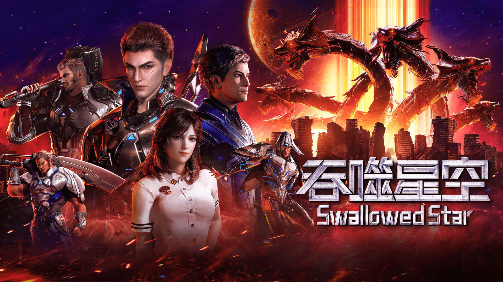
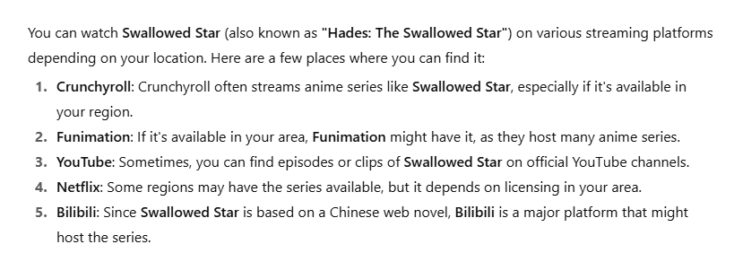

One day, the RR Virus of unknown origin appears on Earth, and disaster strikes the world. The infected animals mutate into terrifying monsters and attack on a large scale. When humans faced destruction, they built walls and founded cities as humanity’s last strongholds. The trials that mankind experiences during this period are called the “Great Nirvana”. In such an extreme living environment, human physical strength also gradually evolved and developed; martial arts sprang up, and human physical strength was qualitatively increasing compared to before. And the best of them are called “Warriors”. 18-year-old Luo Feng also dreams of becoming one of them. Right now, he is about to take the college entrance exam and face a choice at a crossroads in his life, but suddenly a monster attack affects the trajectory of his life. The first challenge he had to confront was the subtle, invisible influence of the external environment, which was shaped by Luo Feng's family's poor condition and difficult life. His parents were unable to provide much assistance, leaving him to rely solely on his own efforts. In the end, under constant hard work, Luo Feng continued to explore his own potential and was recognized for his increased abilities and self-esteem. Not only that, Luo Feng not only shouldered the burden of supporting the family but also joined forces with other warriors of justice to face evil monsters and protect the land of mankind for the survival and development of a better mankind. In the desperate situation of doomsday, can Luo Feng and the other warriors repel the monsters and successfully protect the human world?
